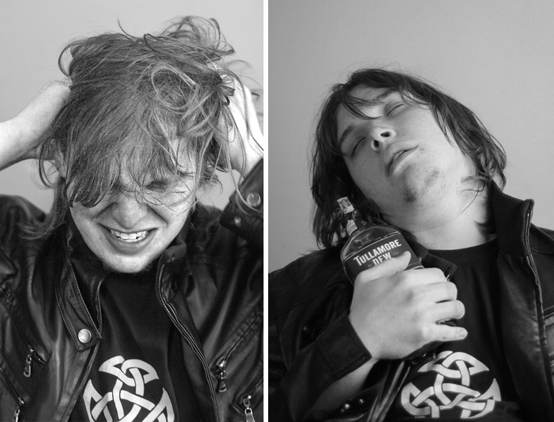

PORTRÉTY I
Jan Staněk
Jiří Štraub

TITULKY
Fotograf: Martin Jenč
PŘED OBJEKTIVEM
Káťa Elznicová
Markéta Carvanová
Štěpule Drozdová
Matyáš Kučera
Jakub Týče
ANOTACE
Portréty není tak lehké fotit jak by se na první pohled mohlo zdát. Mimo filmu a jiných věcí je Martin zainteresovaný i do
tohoto druhu umění a album, jež momentálně máte otevřené, představuje jeho první pokusy o různá vyobrazení svých kamarádů.
Měl jsem tu čest se focení také zúčastnit a stvořit s ním sérii snímků, na kterých si s až komickou vervou snažím rozcuchat
vlasy či přiopile pózovat s flaškou Tullamore Dew. Na dalších snímcích nechybí kupříkladu hluboce zamyšlený Honza Staněk,
kamarád společnosti Crayfilm Jakub Týče nebo mimořádně okouzlující Káťa Elznicová. Jiří Štraub
© 2013 MARTIN JENČ All Rights Reserved